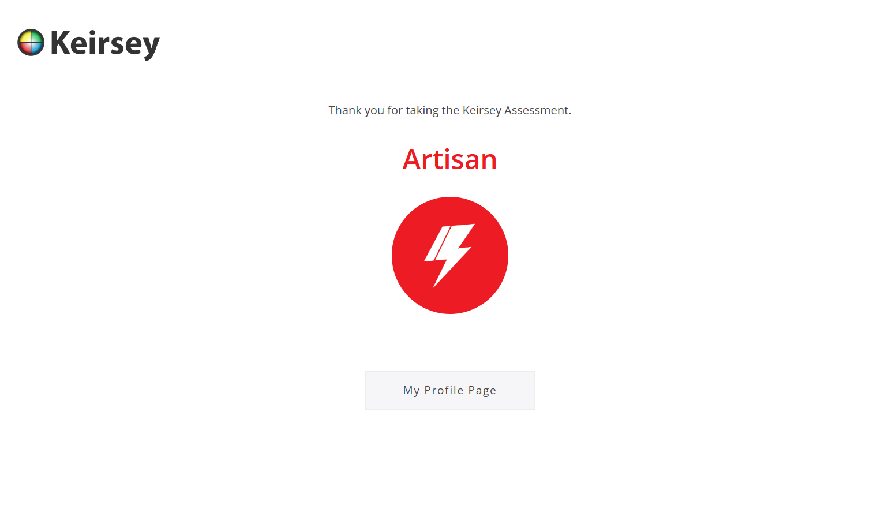

The Impact of Chess on My Academic Pursuits
For the past 13 years, chess has been more than just a hobby—it's been a game-changer for my journey in cybersecurity. The mental sharpness required to outthink an opponent mirrors the skills needed to counter complex security threats. Chess demands strategic foresight, much like anticipating cyberattacks before they happen. It’s also a powerful tool for problem-solving, teaching me to craft smart, tactical responses under pressure. The discipline and adaptability it instills are crucial for thriving in a fast-paced, ever-changing field like cybersecurity. Ever tried chess? If not, check out Spark Chess to get started. Spark Chess.
My Favourite Quote
If you can't fly then run,
If you can't run then walk,
If you can't walk then crawl,
But whatever you do you have to keep moving forward.
~ A quote from Martin Luther King Jr.
Read more quotes of him here.
Martin Luther King Jr. was a Baptist minister and civil rights activist who had a seismic impact on race relations in the United States, beginning in the mid-1950s. Among his many efforts, King headed the Southern Christian Leadership Conference. Through his nonviolent activism and inspirational speeches, he played a pivotal role in ending legal segregation of Black Americans as well as the creation of the Civil Rights Act of 1964 and the Voting Rights Act of 1965. King won the Nobel Peace Prize in 1964, among several other honors. Assassinated by James Earl Ray, King died on April 4, 1968, at age 39. He continues to be remembered as one of the most influential and inspirational Black leaders in history.

My Personality

According to the Keirsey temperament test, I am classified as an Artisan. Artisans thrive in practical, hands-on environments and are most comfortable in the real world of tangible objects and dynamic experiences. They are described as adaptable, impulsive, and competitive individuals who enjoy taking risks and pursuing excitement. Artisans often possess keen senses and a natural skill for using tools, instruments, or vehicles, while their charismatic nature makes them personable and charming with those around them. I partially agree with this assessment. While I do appreciate adaptability and problem-solving in fast-paced environments, I wouldn't say I fully align with the spontaneous or risk-taking nature often attributed to Artisans. The emphasis on living for the present and resisting structured obligations does not entirely reflect my personal approach to long-term goals and planning. The test, though insightful, lacks the depth needed to account for the complexities of individual personalities. Categorizing people based solely on a limited set of questions may oversimplify unique traits. Nonetheless, it provides a general framework for understanding personal tendencies and preferences. You can take your own Kiersey test below: